Gráficos de Línea con
geom_line()
Raymond L. Tremblay
2026-04-15
Fecha de la última revisión
## [1] "2026-04-15"

Parte 1: Fundamentos de geom_line()
¿Cuándo usar gráficos de línea?
Los gráficos de línea son ideales cuando:
- La variable del eje X tiene un orden natural (tiempo, secuencia, distancia a lo largo de un transecto).
- Queremos enfatizar la tendencia o trayectoria de los datos, no los puntos individuales.
- Necesitamos comparar trayectorias de múltiples grupos a lo largo de la misma secuencia.
No uses gráficos de línea cuando:
- El eje X es categórico sin orden (usa barras o puntos).
- Los datos no tienen continuidad entre observaciones (usa
geom_point()).
Gráfico de línea básico con geom_line()
Los gráficos de línea se usan frecuentemente cuando hay una variable de datos continuos ordenada secuencialmente, como las series en tiempo (años, hora, minutos, u otras secuencias). En los ejemplos que veremos a continuación se muestra la relación entre la detección del cáncer de tiroides en EE. UU. entre los años 1975 y 2012, su aumento y el nivel de mortandad.
En la Figura se muestra el cambio en número de casos de cáncer de tiroides por cada 100,000 habitantes. La columna Year, año, es una variable numérica, y típicamente no se gráfica correctamente porque no se toma como numérica automáticamente. Es necesario identificarla como que contiene valores enteros usando la opción as.integer.
En primer lugar, crearemos un nuevo data.frame para
agrupar solamente los nuevos casos de cáncer. Para crear un
data.frame solamente con esos datos se usa la función
filter() o la opción which():
## Year Cases Rate
## 1 1975 New Cases 4.8
## 2 1976 New Cases 4.8
## 3 1977 New Cases 5.4
## 4 1978 New Cases 5.1
## 5 1979 New Cases 4.5
## 6 1980 New Cases 4.3
## 7 1981 New Cases 4.4
## 8 1982 New Cases 4.6
## 9 1983 New Cases 4.7
## 10 1984 New Cases 4.8
## 11 1985 New Cases 5.1
## 12 1986 New Cases 5.3
## 13 1987 New Cases 5.0
## 14 1988 New Cases 4.9
## 15 1989 New Cases 5.4
## 16 1990 New Cases 5.5
## 17 1991 New Cases 5.5
## 18 1992 New Cases 5.9
## 19 1993 New Cases 5.6
## 20 1994 New Cases 6.1
## 21 1995 New Cases 6.2
## 22 1996 New Cases 6.5
## 23 1997 New Cases 6.8
## 24 1998 New Cases 7.0
## 25 1999 New Cases 7.3
## 26 2000 New Cases 7.6
## 27 2001 New Cases 8.3
## 28 2002 New Cases 9.2
## 29 2003 New Cases 9.6
## 30 2004 New Cases 10.1
## 31 2005 New Cases 11.0
## 32 2006 New Cases 11.3
## 33 2007 New Cases 12.4
## 34 2008 New Cases 13.2
## 35 2009 New Cases 14.4
## 36 2010 New Cases 13.9
## 37 2011 New Cases 14.8
## 38 2012 New Cases 14.9
## 39 1975 Deaths_US 0.5
## 40 1976 Deaths_US 0.6
## 41 1977 Deaths_US 0.6
## 42 1978 Deaths_US 0.5
## 43 1979 Deaths_US 0.5
## 44 1980 Deaths_US 0.5
## 45 1981 Deaths_US 0.5
## 46 1982 Deaths_US 0.5
## 47 1983 Deaths_US 0.4
## 48 1984 Deaths_US 0.5
## 49 1985 Deaths_US 0.4
## 50 1986 Deaths_US 0.5
## 51 1987 Deaths_US 0.5
## 52 1988 Deaths_US 0.4
## 53 1989 Deaths_US 0.4
## 54 1990 Deaths_US 0.4
## 55 1991 Deaths_US 0.4
## 56 1992 Deaths_US 0.5
## 57 1993 Deaths_US 0.5
## 58 1994 Deaths_US 0.4
## 59 1995 Deaths_US 0.4
## 60 1996 Deaths_US 0.5
## 61 1997 Deaths_US 0.5
## 62 1998 Deaths_US 0.4
## 63 1999 Deaths_US 0.5
## 64 2000 Deaths_US 0.5
## 65 2001 Deaths_US 0.5
## 66 2002 Deaths_US 0.5
## 67 2003 Deaths_US 0.4
## 68 2004 Deaths_US 0.5
## 69 2005 Deaths_US 0.5
## 70 2006 Deaths_US 0.5
## 71 2007 Deaths_US 0.5
## 72 2008 Deaths_US 0.5
## 73 2009 Deaths_US 0.5
## 74 2010 Deaths_US 0.5
## 75 2011 Deaths_US 0.5
## 76 2012 Deaths_US 0.5## [1] New Cases Deaths_US
## Levels: Deaths_US New Cases| Year | Cases | Rate |
|---|---|---|
| 1975 | New Cases | 4.8 |
| 1976 | New Cases | 4.8 |
| 1977 | New Cases | 5.4 |
| 1978 | New Cases | 5.1 |
| 1979 | New Cases | 4.5 |
| 1980 | New Cases | 4.3 |
El procedimiento para preparar el gráfico de tiroides se presenta a continuación:
ggplot(subTiroide, aes(x = as.integer(Year), y = Rate)) +
geom_line(linewidth = 1, colour = "red") +
annotate("text", x = 1985, y = 9, size = 3,
label = "Nuevos casos de \n cáncer \n de Tiroides",
color = "black") +
guides(color = "none") +
ylab("Números de nuevos casos\n de cáncer de Tiroides \n por 100,000 habitantes") +
xlab("Años") +
theme(axis.title = element_text(size = 8, face = "italic"),
axis.title.y.left = element_text(size = 10, face = "bold"))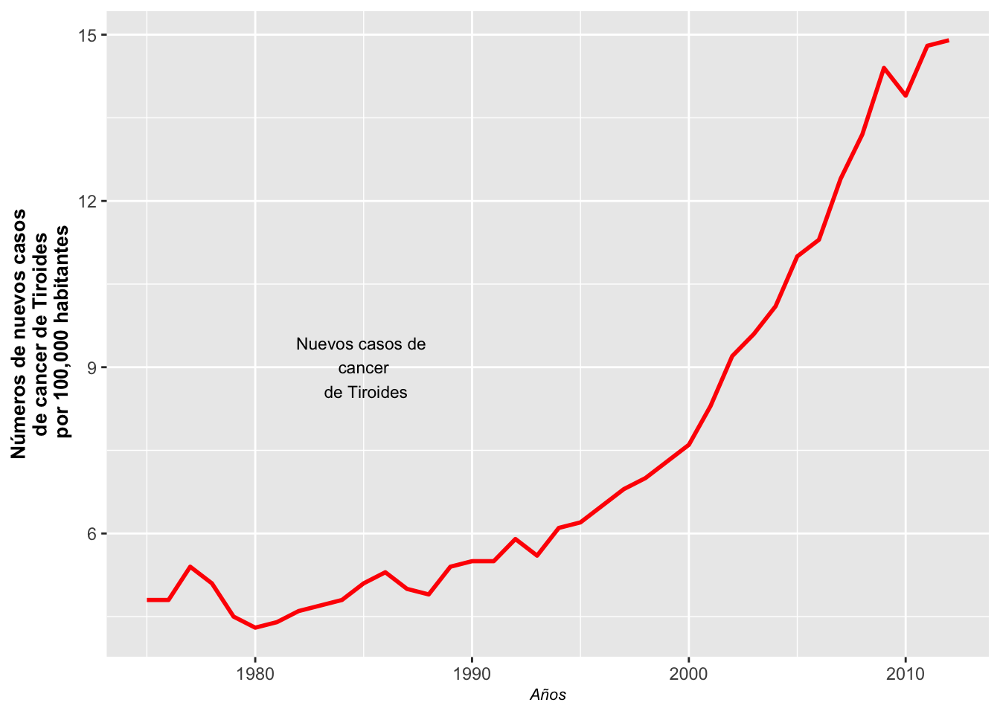
Note que se utilizó la función annotate para escribir información sobre el gráfico. Esta función será discutida con más detalle más adelante.
Gráfico con múltiples líneas
A veces es importante comparar dos o más secuencias de datos. Usando
la función group = se identifica cuáles son los grupos — si
hubiese más de dos grupos, habría una línea para cada grupo. Lo que se
observa es que aunque hay mucha más gente diagnosticada con cáncer de la
tiroides, la proporción de gente que muere de este tipo de cáncer es
consistente a través del tiempo.
ggplot(Tiroide, aes(x = as.integer(Year), y = Rate,
group = Cases, color = Cases)) +
geom_line(linewidth = 2) +
annotate("text", x = 1990, y = 8, size = 4,
label = "Nuevos casos") +
annotate("text", x = 2000, y = 1, size = 4,
label = "Mortandad") +
guides(color = "none") +
ylab("Números de nuevos casos\n por 100,000 habitantes") +
xlab("Años") +
theme(axis.title = element_text(size = 10, face = "bold"))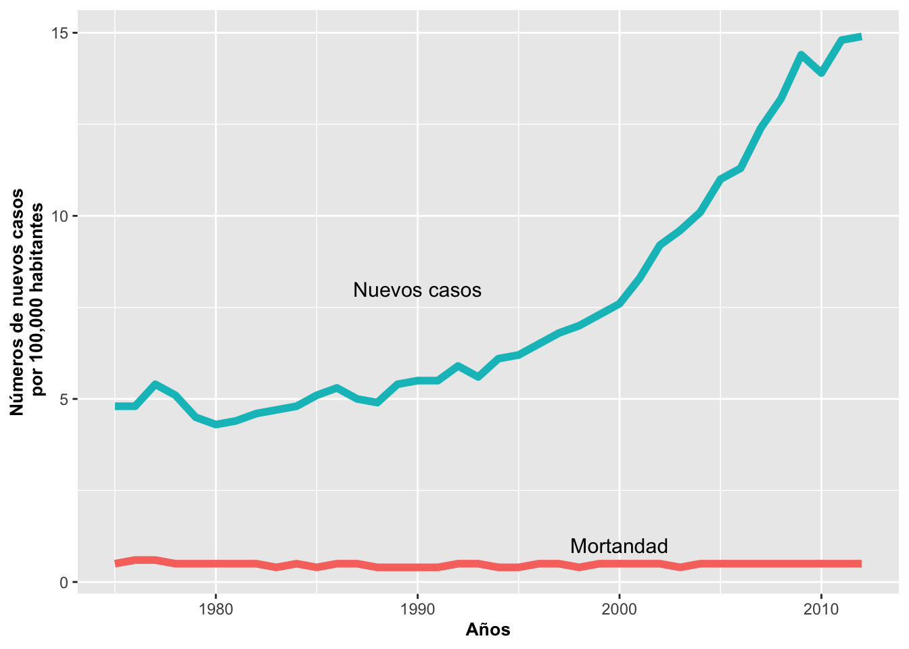
Expandir los ejes
Muchas veces el intervalo de la escala de los ejes no es el óptimo.
Para modificar el eje de X e incluir el último año, se
usa xlim() o scale_x_continuous(). También se
puede cambiar el color de las líneas manualmente con
scale_color_manual():
ggplot(Tiroide, aes(x = as.integer(Year), y = Rate,
group = Cases, color = Cases)) +
geom_line(linewidth = 2) +
annotate("text", x = 1990, y = 10, size = 4, label = "Nuevos casos") +
annotate("text", x = 1995, y = 1, size = 4, label = "Mortandad") +
scale_color_manual(values = c("New Cases" = "#00674F",
"Deaths_US" = "pink")) +
guides(color = "none") +
ylab("Razón") +
xlab("Años") +
xlim(min(Tiroide$Year - 5), max(Tiroide$Year + 6)) +
theme(axis.title = element_text(size = 14, face = "bold"))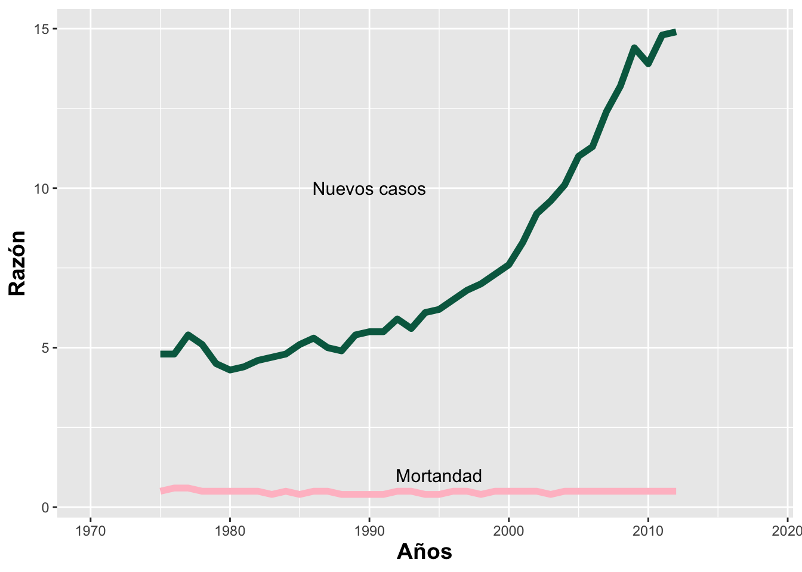
Añadir puntos sobre la línea
A veces nos interesa que la línea muestre los puntos que la componen.
Se añade geom_point() después de
geom_line() para que los puntos aparezcan encima de la
línea:
ggplot(Tiroide, aes(x = as.integer(Year), y = Rate,
group = Cases, color = Cases)) +
geom_line(linewidth = 1) +
geom_point(color = "black", size = 1.5) +
annotate("text", x = 1990, y = 8, size = 4, label = "Nuevos casos") +
annotate("text", x = 2000, y = 2, size = 4, label = "Mortandad") +
guides(color = "none") +
ylab("Razón") +
xlab("Años") +
theme(axis.title = element_text(size = 10, face = "bold"))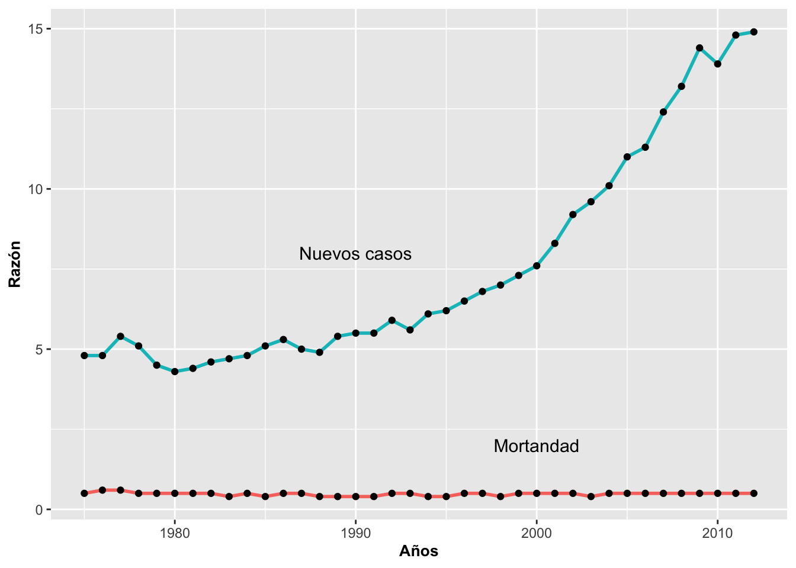
Formas de los puntos (shapes)
Los puntos tienen formas variadas representadas por un número (0 al
25) o un símbolo. La opción fill (para rellenar el punto
con un color específico) es aplicable solamente a las formas 21 a
25.
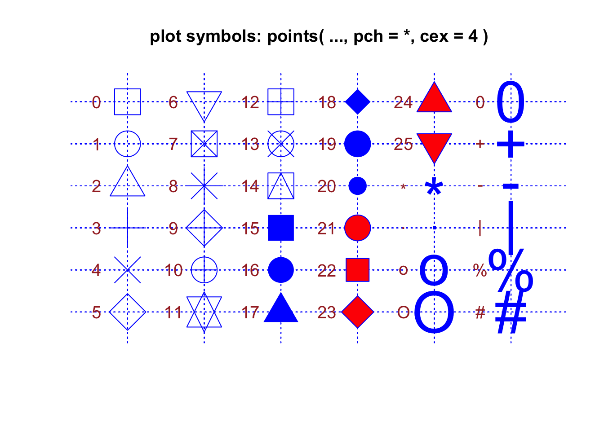
Los símbolos para las gráficas de puntos
El orden de las capas importa
Si las líneas y los puntos son de diferentes colores, se tienen que
especificar los puntos con geom_point()
después de geom_line() ya que ggplot
funciona con capas de información. Lo que se especifica primero, sale
primero (queda debajo).
Ejemplo: puntos encima de la línea (correcto):
ggplot(Tiroide, aes(x = as.integer(Year), y = Rate,
group = Cases, color = Cases)) +
geom_line(linewidth = 3) +
geom_point(shape = 21, size = 3, color = "black", fill = "white") +
guides(color = "none") +
ylab("Razón") + xlab("Años") +
scale_x_continuous(limits = c(2000, 2012)) +
theme(axis.title = element_text(size = 10, face = "bold"))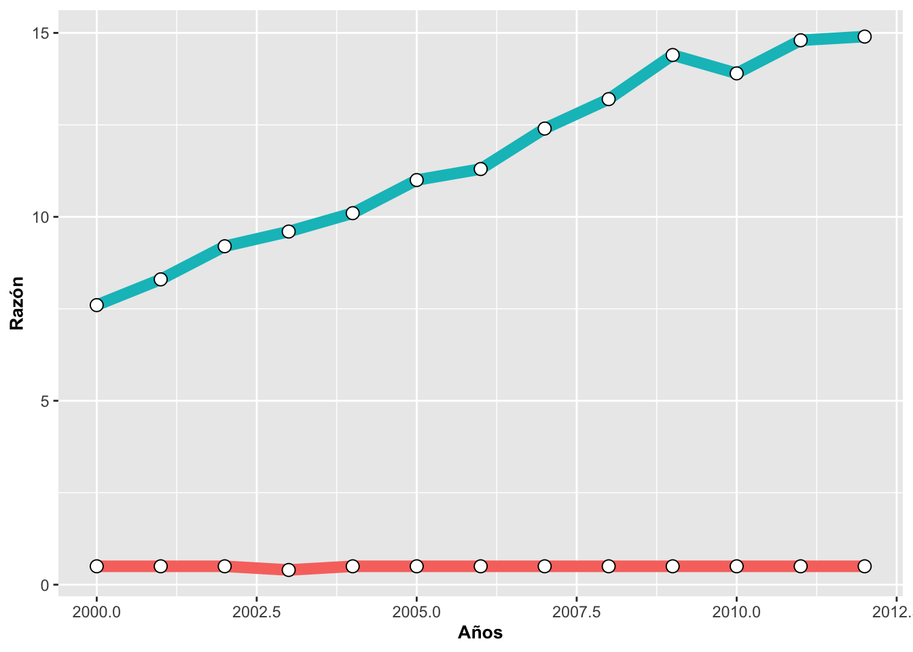
Ejemplo: puntos debajo de la línea (incorrecto):
ggplot(Tiroide, aes(x = as.integer(Year), y = Rate,
group = Cases, color = Cases)) +
geom_point(shape = 21, size = 4, color = "black", fill = "white") +
geom_line(linewidth = 3) +
guides(color = "none") +
ylab("Razón") + xlab("Años") +
scale_x_continuous(limits = c(2000, 2012)) +
theme(axis.title = element_text(size = 10, face = "bold"))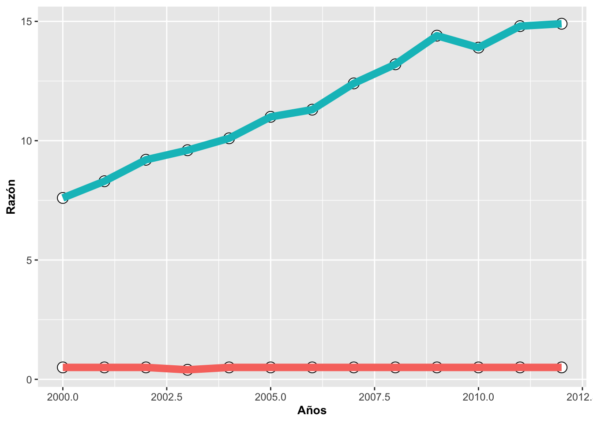
Parámetros de geom_line()
| Parámetro | Descripción | Ejemplo |
|---|---|---|
alpha |
Transparencia (0 = invisible, 1 = opaco) | alpha = 0.5 |
color |
Color de la línea | color = "red" |
linewidth |
Ancho de la línea | linewidth = 1.5 |
linetype |
Tipo de línea | linetype = "dashed" |
group |
Variable que define los grupos | group = Species |
Tipos de línea disponibles:
| Valor | Nombre | Apariencia |
|---|---|---|
| 1 | "solid" |
———— |
| 2 | "dashed" |
– – – – |
| 3 | "dotted" |
· · · · |
| 4 | "dotdash" |
· – · – |
| 5 | "longdash" |
—— —— |
| 6 | "twodash" |
— — — |
Parte 2: Técnicas avanzadas
Bandas de confianza con geom_ribbon()
geom_ribbon() permite añadir una banda sombreada
alrededor de la línea para mostrar incertidumbre (intervalos de
confianza, error estándar, o rango). Esto es muy útil para mostrar la
variabilidad en datos de series temporales.
# Crear datos simulados de temperatura mensual en dos localidades de PR
set.seed(2026)
meses <- rep(1:12, 2)
localidad <- rep(c("Maricao (montaña)", "Lajas (costa sur)"), each = 12)
temp_media <- c(
# Maricao: más fresco, menos variación
19.5, 19.8, 20.5, 21.2, 22.0, 22.8, 23.0, 23.1, 22.7, 22.0, 21.0, 20.0,
# Lajas: más cálido, más variación
25.0, 25.2, 25.8, 26.5, 27.2, 28.0, 28.5, 28.6, 28.2, 27.5, 26.5, 25.5
)
temp_se <- c(
rep(0.8, 12),
rep(1.2, 12)
)
temp_df <- data.frame(
Mes = meses,
Localidad = localidad,
Temp_Mean = temp_media,
Temp_SE = temp_se
) %>%
mutate(
CI_low = Temp_Mean - 1.96 * Temp_SE,
CI_high = Temp_Mean + 1.96 * Temp_SE
)
ggplot(temp_df, aes(x = Mes, y = Temp_Mean,
color = Localidad, fill = Localidad)) +
geom_ribbon(aes(ymin = CI_low, ymax = CI_high),
alpha = 0.2, color = NA) +
geom_line(linewidth = 1.2) +
geom_point(size = 2) +
scale_x_continuous(breaks = 1:12,
labels = c("Ene","Feb","Mar","Abr","May","Jun",
"Jul","Ago","Sep","Oct","Nov","Dic")) +
scale_color_manual(values = c("Maricao (montaña)" = "#2E86AB",
"Lajas (costa sur)" = "#D73027")) +
scale_fill_manual(values = c("Maricao (montaña)" = "#2E86AB",
"Lajas (costa sur)" = "#D73027")) +
labs(x = "Mes", y = "Temperatura media (°C)",
title = "Temperatura mensual en dos localidades de Puerto Rico",
subtitle = "Línea = media, banda = intervalo de confianza al 95%") +
theme_minimal(base_size = 13) +
theme(legend.position = "bottom")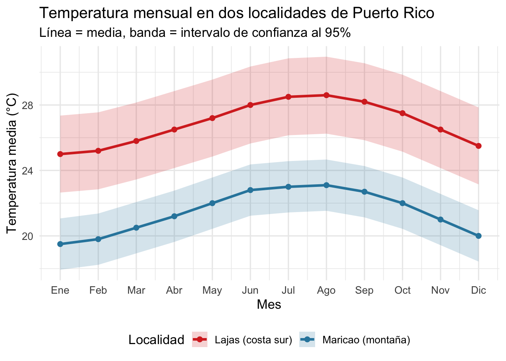
Conceptos clave:
geom_ribbon()necesitayminyymaxpara definir la banda.- Se coloca antes de
geom_line()para que la línea quede encima. alpha = 0.2hace la banda semi-transparente.color = NAen el ribbon elimina el borde de la banda.
Líneas suavizadas con geom_smooth()
Cuando los datos tienen mucho ruido, podemos superponer una línea de
tendencia suavizada. geom_smooth() añade un modelo local
(LOESS o GAM) sobre los datos:
# Datos simulados: conteo de coquíes por noche durante un año
set.seed(99)
dias <- 1:365
# Patrón estacional + ruido
conteo_coqui <- round(30 + 15 * sin(2 * pi * dias / 365 - pi/2) +
rnorm(365, 0, 8))
conteo_coqui <- pmax(0, conteo_coqui)
coqui_df <- data.frame(
Dia = dias,
Fecha = as.Date("2025-01-01") + dias - 1,
Conteo = conteo_coqui
)
ggplot(coqui_df, aes(x = Fecha, y = Conteo)) +
geom_line(alpha = 0.3, color = "grey50") +
geom_smooth(method = "loess", span = 0.15,
color = "#00674F", fill = "#00674F",
alpha = 0.2, linewidth = 1.2) +
labs(x = "Fecha", y = "Coquíes detectados por noche",
title = "Actividad vocal de Eleutherodactylus coqui",
subtitle = "Línea gris = datos diarios, línea verde = tendencia LOESS") +
theme_minimal(base_size = 13)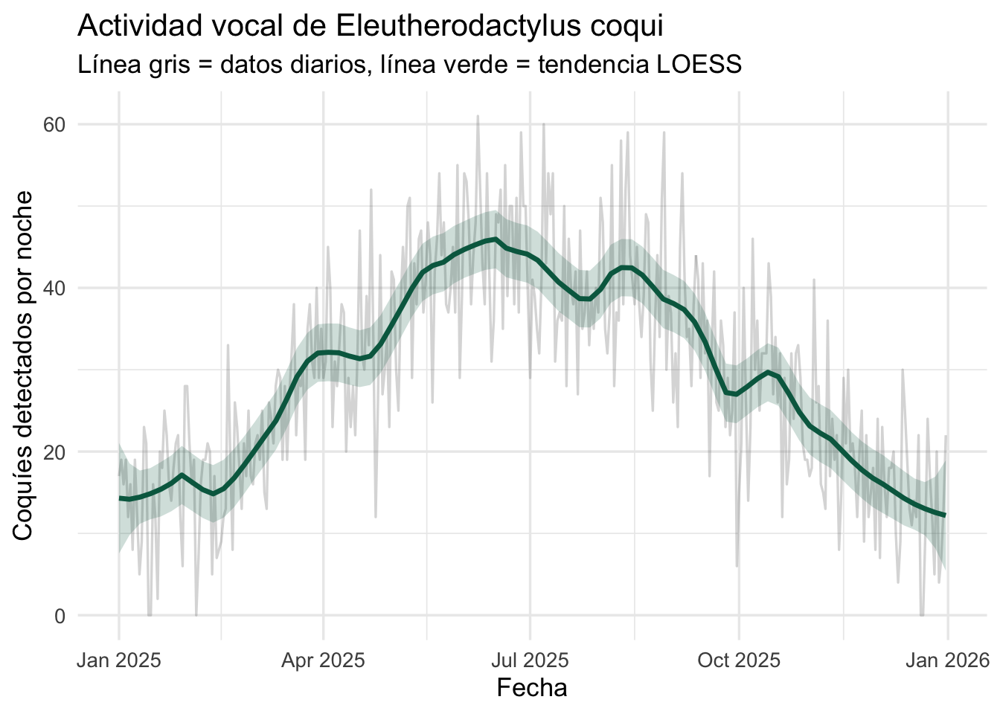
Conceptos clave:
method = "loess"ajusta un modelo local. Para datos grandes, usamethod = "gam".spancontrola cuánto se suaviza (valores pequeños = más detalle, valores grandes = más suave).- La línea original semi-transparente (
alpha = 0.3) muestra el ruido real.
Líneas escalonadas con geom_step()
Cuando los cambios ocurren en puntos discretos (no gradualmente),
geom_step() es más apropiado que geom_line().
Esto es útil para datos de supervivencia, precios, o políticas que
cambian en fechas específicas.
Aquí usamos datos reales del precio promedio anual del petróleo crudo WTI (West Texas Intermediate) en dólares por barril, la referencia principal del mercado petrolero de América del Norte. Fuente: U.S. Energy Information Administration (EIA) y Trading Economics.
# Precio promedio anual del petróleo crudo WTI (USD/barril)
# Fuente: EIA Annual Average + estimaciones 2025-2026
# 2020 incluye el colapso por COVID (WTI llegó a -$37.63 en abril 2020)
# 2022 refleja la invasión rusa de Ucrania
# 2025-2026 reflejan la crisis del Estrecho de Ormuz (conflicto US-Irán)
oil_df <- data.frame(
Year = 2015:2026,
WTI_avg = c(
48.66, # 2015 — glut, oversupply
43.29, # 2016 — OPEC cuts begin
50.80, # 2017 — recovery
65.23, # 2018 — steady growth
56.99, # 2019 — trade war fears
39.16, # 2020 — COVID crash (April: -$37.63!)
67.99, # 2021 — recovery + reopening
94.53, # 2022 — Russia-Ukraine war
77.61, # 2023 — stabilization
75.96, # 2024 — oversupply concerns
68.17, # 2025 — pre-conflict (Jan-Feb avg)
93.00 # 2026 — Strait of Hormuz crisis (Apr est.)
)
)
ggplot(oil_df, aes(x = Year, y = WTI_avg)) +
# Highlight crisis periods
annotate("rect", xmin = 2019.5, xmax = 2020.5,
ymin = -Inf, ymax = Inf,
fill = "#FF9999", alpha = 0.2) +
annotate("rect", xmin = 2021.5, xmax = 2022.5,
ymin = -Inf, ymax = Inf,
fill = "#FFD700", alpha = 0.2) +
annotate("rect", xmin = 2025.5, xmax = 2026.5,
ymin = -Inf, ymax = Inf,
fill = "#FF6B6B", alpha = 0.2) +
geom_step(linewidth = 1.2, color = "#2C3E50") +
geom_point(size = 3, color = "#2C3E50", fill = "white", shape = 21,
stroke = 1.2) +
# Annotate key events
annotate("text", x = 2020, y = 32, label = "COVID-19\ncrash",
size = 2.8, color = "#C0392B", fontface = "italic") +
annotate("text", x = 2022, y = 100, label = "Rusia–\nUcrania",
size = 2.8, color = "#8B6914", fontface = "italic") +
annotate("text", x = 2026, y = 100, label = "Estrecho de\nOrmuz",
size = 2.8, color = "#C0392B", fontface = "italic") +
scale_x_continuous(breaks = 2015:2026) +
scale_y_continuous(labels = scales::dollar_format(suffix = ""),
breaks = seq(30, 100, 10)) +
labs(x = "Año", y = "Precio promedio WTI (USD/barril)",
title = "Precio del petróleo crudo WTI — promedios anuales (2015–2026)",
subtitle = "geom_step() muestra cambios discretos anuales | Fuente: EIA, Trading Economics",
caption = "Nota: 2025 = promedio Ene-Feb pre-conflicto; 2026 = estimado abril (crisis Ormuz)") +
theme_minimal(base_size = 13) +
theme(axis.text.x = element_text(angle = 45, hjust = 1),
plot.caption = element_text(size = 8, color = "grey50"))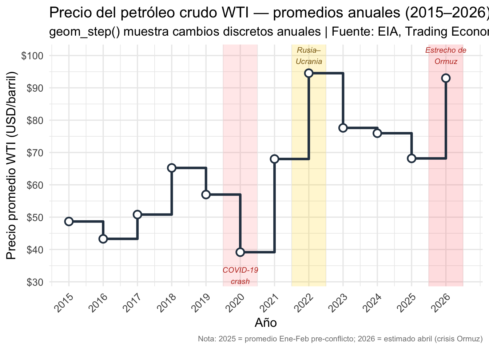
Conceptos clave:
geom_step()es más apropiado quegeom_line()aquí porque el precio promedio anual es un valor discreto — no cambió gradualmente durante el año.- Las bandas de color con
annotate("rect")resaltan los eventos geopolíticos clave que impactaron los precios. - El colapso de 2020 ($39.16 promedio, con un mínimo histórico de -$37.63 en un solo día de abril) y la crisis actual del Estrecho de Ormuz ($93+ en abril 2026) son visualmente evidentes.
Líneas con segmentos y flechas con geom_segment()
geom_segment() permite dibujar segmentos individuales
entre dos puntos. Combinado con arrow(), es útil para
mostrar direcciones de cambio o conectar eventos:
# Cambio en población de tres especies antes y después del huracán María
huracan_df <- data.frame(
Especie = c("Amazona vittata", "Buteo platypterus", "Falco sparverius"),
Antes = c(56, 450, 320),
Despues = c(28, 380, 285),
y_pos = c(3, 2, 1)
)
ggplot(huracan_df) +
geom_segment(aes(x = Antes, xend = Despues,
y = Especie, yend = Especie,
color = Despues < Antes),
linewidth = 2,
arrow = arrow(length = unit(0.3, "cm"), type = "closed")) +
geom_point(aes(x = Antes, y = Especie), size = 4, color = "grey30") +
geom_point(aes(x = Despues, y = Especie), size = 4, color = "red") +
scale_color_manual(values = c("TRUE" = "#D73027", "FALSE" = "#4575B4"),
labels = c("TRUE" = "Disminución", "FALSE" = "Aumento"),
name = "Cambio") +
annotate("text", x = 55, y = 3.3, label = "● Antes ● Después",
size = 3, hjust = 0) +
labs(x = "Población estimada (individuos)",
y = NULL,
title = "Cambio poblacional después del Huracán María (2017)",
subtitle = "Punto gris = antes, punto rojo = después, flecha = dirección") +
theme_minimal(base_size = 13) +
theme(legend.position = "none")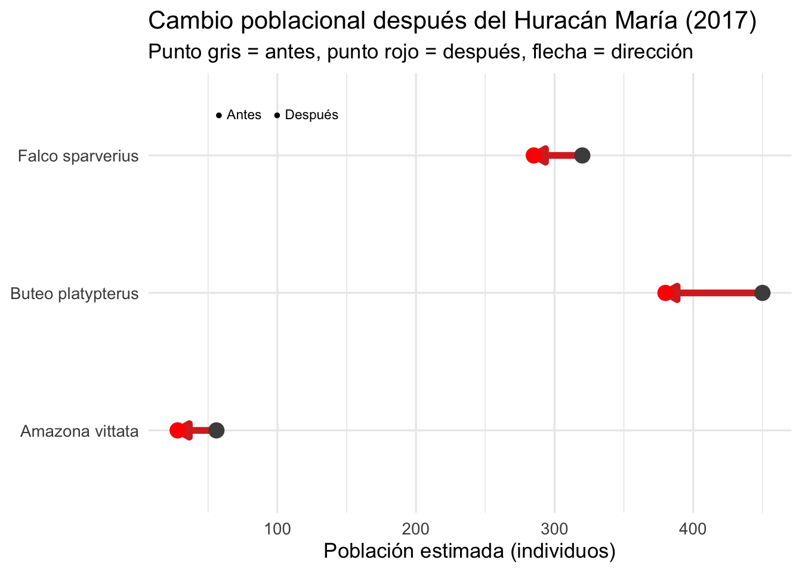
Múltiples paneles con facet_wrap()
Cuando hay muchos grupos, poner todas las líneas en un solo gráfico
puede ser confuso. facet_wrap() divide el gráfico en
paneles separados.
Aquí usamos datos reales de precipitación promedio mensual para cuatro ciudades de Puerto Rico. Los datos provienen de las normales climáticas 1991–2020 del NOAA (National Oceanic and Atmospheric Administration), publicadas por U.S. Climate Data. Las unidades originales (pulgadas) se convierten a milímetros.
# Precipitación mensual promedio (pulgadas) — Normales NOAA 1991–2020
# Fuente: https://www.usclimatedata.com/climate/puerto-rico/united-states/7335
lluvia_df <- tribble(
~Ciudad, ~Ene, ~Feb, ~Mar, ~Abr, ~May, ~Jun, ~Jul, ~Ago, ~Sep, ~Oct, ~Nov, ~Dic,
"San Juan (Norte)", 4.07, 2.58, 2.18, 4.60, 5.54, 4.66, 6.02, 6.29, 6.50, 5.21, 7.37, 4.85,
"Ponce (Sur)", 0.73, 1.21, 1.87, 2.26, 4.18, 2.16, 2.84, 4.56, 6.94, 5.38, 3.94, 1.45,
"Fajardo (Este)", 4.42, 3.07, 2.70, 3.41, 8.36, 5.44, 5.91, 5.40, 6.84, 8.00, 7.99, 5.75,
"Mayagüez (Oeste)", 1.57, 2.52, 3.03, 4.06, 7.24, 6.34, 8.66, 9.17, 10.59, 8.94, 4.69, 1.81
)
# Convertir a formato largo y de pulgadas a milímetros
lluvia_long <- lluvia_df %>%
pivot_longer(
cols = Ene:Dic,
names_to = "Mes_nombre",
values_to = "Precip_in"
) %>%
mutate(
Precip_mm = round(Precip_in * 25.4, 1),
Mes = match(Mes_nombre, c("Ene","Feb","Mar","Abr","May","Jun",
"Jul","Ago","Sep","Oct","Nov","Dic")),
Mes_label = factor(Mes_nombre,
levels = c("Ene","Feb","Mar","Abr","May","Jun",
"Jul","Ago","Sep","Oct","Nov","Dic"))
)
# Gráfico con facet_wrap
ggplot(lluvia_long, aes(x = Mes, y = Precip_mm, color = Ciudad)) +
geom_line(linewidth = 1.1) +
geom_point(size = 2.2) +
facet_wrap(~ Ciudad, ncol = 2) +
scale_x_continuous(breaks = 1:12,
labels = c("E","F","M","A","M","J",
"J","A","S","O","N","D")) +
scale_color_manual(values = c(
"San Juan (Norte)" = "#2E86AB",
"Ponce (Sur)" = "#D73027",
"Fajardo (Este)" = "#4DAF4A",
"Mayagüez (Oeste)" = "#984EA3"
)) +
labs(x = "Mes", y = "Precipitación (mm)",
title = "Precipitación mensual promedio por región — Puerto Rico",
subtitle = "Normales climáticas NOAA 1991–2020 | Fuente: U.S. Climate Data",
caption = "Datos convertidos de pulgadas a mm (×25.4)") +
theme_minimal(base_size = 12) +
theme(legend.position = "none",
strip.text = element_text(face = "bold"),
plot.caption = element_text(size = 8, color = "grey50"))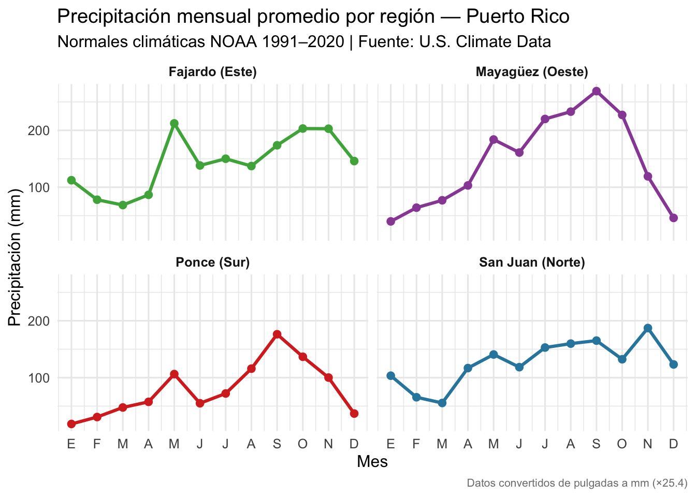
¿Qué patrones se observan?
- Ponce (sur) es la ciudad más seca, con un mínimo de solo 19 mm en enero — está en la “sombra pluviométrica” de la cordillera.
- Mayagüez (oeste) tiene el pico más extremo en septiembre (~269 mm), recibiendo la humedad del mar Caribe.
- Fajardo (este) tiene lluvias elevadas todo el año, con un segundo pico en octubre–noviembre por los frentes del Atlántico.
- San Juan (norte) muestra el patrón bimodal clásico: un pico en mayo, un descenso relativo en junio–julio, y el máximo en noviembre.
Versión alternativa — todas las ciudades en un solo panel para comparar directamente:
ggplot(lluvia_long, aes(x = Mes, y = Precip_mm, color = Ciudad)) +
geom_line(linewidth = 1) +
geom_point(size = 2) +
scale_x_continuous(breaks = 1:12,
labels = c("E","F","M","A","M","J",
"J","A","S","O","N","D")) +
scale_color_manual(values = c(
"San Juan (Norte)" = "#2E86AB",
"Ponce (Sur)" = "#D73027",
"Fajardo (Este)" = "#4DAF4A",
"Mayagüez (Oeste)" = "#984EA3"
)) +
labs(x = "Mes", y = "Precipitación (mm)",
title = "Comparación directa de lluvia mensual — 4 regiones de PR",
subtitle = "Normales NOAA 1991–2020",
color = "Ciudad") +
theme_minimal(base_size = 13) +
theme(legend.position = "bottom")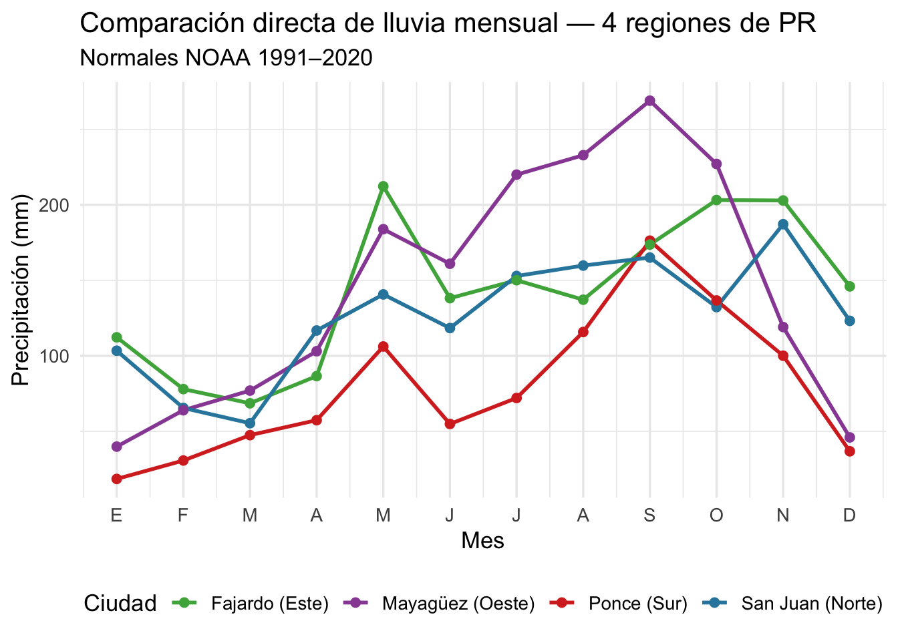
Ejes duales con sec_axis()
A veces queremos mostrar dos variables con escalas diferentes en el mismo gráfico. Precaución: los ejes duales pueden ser engañosos si no se usan cuidadosamente.
# Datos: temperatura y humedad durante un día en el Yunque
horas <- 0:23
temp_yunque <- 22 + 5 * sin(2 * pi * (horas - 6) / 24) + rnorm(24, 0, 0.5)
humedad_yunque <- 90 - 15 * sin(2 * pi * (horas - 6) / 24) + rnorm(24, 0, 2)
dia_yunque <- data.frame(
Hora = horas,
Temp = round(temp_yunque, 1),
Humedad = round(humedad_yunque, 1)
)
# Factor de escala para el eje secundario
factor_escala <- 3
ggplot(dia_yunque, aes(x = Hora)) +
geom_line(aes(y = Temp), color = "#D73027", linewidth = 1.2) +
geom_line(aes(y = Humedad / factor_escala), color = "#4575B4",
linewidth = 1.2, linetype = "dashed") +
scale_y_continuous(
name = "Temperatura (°C)",
sec.axis = sec_axis(~ . * factor_escala, name = "Humedad relativa (%)")
) +
scale_x_continuous(breaks = seq(0, 23, 3)) +
labs(x = "Hora del día",
title = "Temperatura y humedad — El Yunque, un día típico",
subtitle = "Rojo sólido = temperatura, azul punteado = humedad") +
theme_minimal(base_size = 13) +
theme(
axis.title.y.left = element_text(color = "#D73027", face = "bold"),
axis.title.y.right = element_text(color = "#4575B4", face = "bold")
)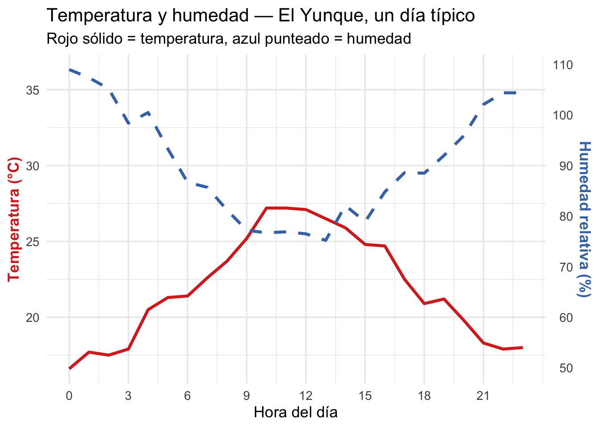
Nota: El eje secundario en ggplot2 es una transformación del eje primario. Se necesita un factor de escala para convertir entre las dos unidades.
Resaltar un período con annotate("rect")
Para destacar un período de interés (un evento, una temporada, una intervención), se puede añadir un rectángulo sombreado:
# Volver al ejemplo de tiroides con período destacado
ggplot(Tiroide, aes(x = as.integer(Year), y = Rate,
group = Cases, color = Cases)) +
# Rectángulo sombreado para el período 2000-2010
annotate("rect", xmin = 2000, xmax = 2010,
ymin = -Inf, ymax = Inf,
alpha = 0.15, fill = "gold") +
annotate("text", x = 2005, y = 14, size = 3,
label = "Período de mayor\n aumento diagnóstico",
fontface = "italic") +
geom_line(linewidth = 1.5) +
geom_point(size = 1.5) +
scale_color_manual(values = c("New Cases" = "#00674F",
"Deaths_US" = "#D73027"),
labels = c("Nuevos casos", "Mortandad")) +
labs(x = "Años", y = "Razón por 100,000",
title = "Cáncer de tiroides en EE.UU.",
color = NULL) +
theme_minimal(base_size = 13) +
theme(legend.position = "bottom")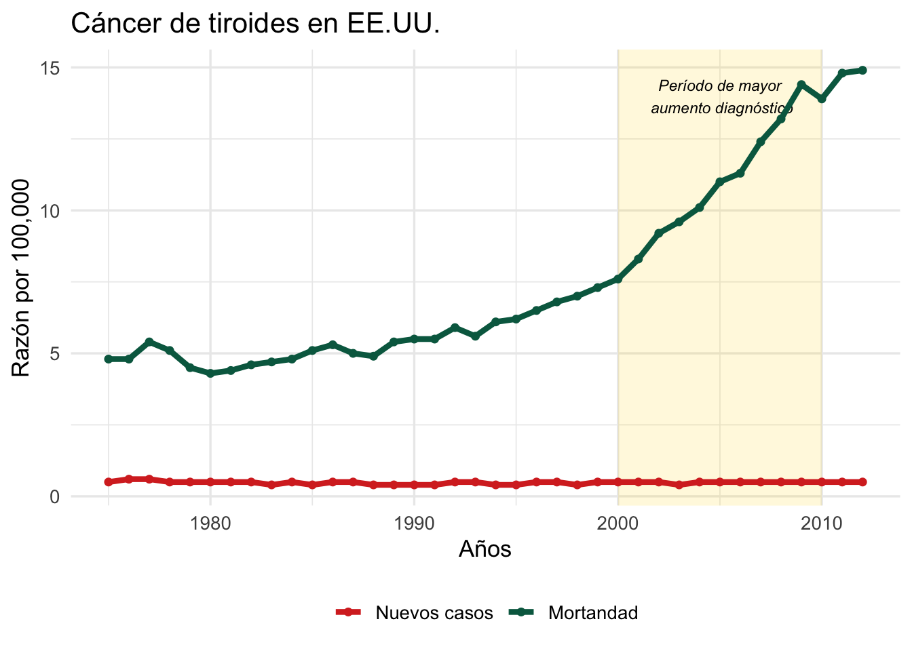
Parte 3: Tarea con iNaturalist
Objetivo
Comparar las tendencias temporales de observaciones de dos especies del mismo género en Puerto Rico usando datos de iNaturalist.
Ejemplo con datos de rinat
library(lubridate)
library(leaflet)
library(rinat)
# Definir el bounding box de Puerto Rico
cajaPR <- c(17.75, -67.4, 18.75, -65.15)
# Descargar datos para la primera especie
sp1 <- get_inat_obs(
taxon_name = "Gymnasio nudipes",
quality = "research",
geo = TRUE,
maxresults = 1000,
bounds = cajaPR
)
# Extraer el año de la fecha
sp1$date <- ymd_hms(sp1$datetime)
sp1$Year <- as.integer(format(sp1$date, "%Y"))
# Contar observaciones por año
sp1_conteo <- sp1 %>%
filter(!is.na(Year)) %>%
group_by(Year) %>%
summarize(n = n(), .groups = "drop") %>%
mutate(Especie = "Gymnasio nudipes")
gt(head(sp1_conteo))Instrucciones paso a paso
- Selecciona una especie de iNaturalist en la base de datos de PR.
- Usando la fecha, contabiliza la cantidad observada por año.
- Selecciona otra especie del mismo género de la misma área.
- Une los conjuntos de datos en un solo data frame
con
bind_rows(). - Crea un gráfico de líneas de las dos especies y el cambio (N) en tiempo por especie.
# Combinar las dos especies
ambas <- bind_rows(sp1_conteo, sp2_conteo)
# Gráfico
ggplot(ambas, aes(x = Year, y = n, color = Especie)) +
geom_line(linewidth = 1.2) +
geom_point(size = 3, shape = 21, fill = "white", stroke = 1.2) +
labs(
x = "Año",
y = "Número de observaciones",
title = "Tendencia de observaciones en iNaturalist — Puerto Rico",
color = "Especie"
) +
theme_minimal(base_size = 13) +
theme(legend.position = "bottom")Especies sugeridas para explorar:
| Grupo | Especie 1 | Especie 2 |
|---|---|---|
| Aves (lechuzas) | Gymnasio nudipes | Megascops nudipes |
| Mamíferos | Rattus norvegicus | Rattus rattus |
| Plantas (orquídeas) | Ionopsis utricularioides | Ionopsis satyrioides |
| Colibríes | Chlorostilbon maugaeus | Anthracothorax viridis |
Parte 4: Ejercicios de práctica
Ejercicio 1: Construir un gráfico con ribbon
Usando los datos de coqui_df (creados anteriormente),
calcula la media mensual y el error
estándar del conteo de coquíes, y crea un gráfico con
geom_ribbon() + geom_line().
# Paso 1: Extraer el mes
coqui_mensual <- coqui_df %>%
mutate(Mes = month(Fecha)) %>%
group_by(Mes) %>%
summarize(
Media = mean(Conteo),
SE = sd(Conteo) / sqrt(n()),
.groups = "drop"
) %>%
mutate(
CI_low = Media - 1.96 * SE,
CI_high = Media + 1.96 * SE
)
# Paso 2: Completa el gráfico
ggplot(coqui_mensual, aes(x = ___, y = ___)) +
geom_ribbon(aes(ymin = ___, ymax = ___),
fill = "___", alpha = ___) +
geom_line(linewidth = ___, color = "___") +
geom_point(size = ___, color = "___") +
scale_x_continuous(breaks = 1:12,
labels = c("E","F","M","A","M","J",
"J","A","S","O","N","D")) +
labs(x = "Mes", y = "Coquíes por noche (media ± IC 95%)",
title = "Patrón estacional de actividad de coquí") +
theme_minimal()Ejercicio 2: Comparar linetype y
geom_step()
Usando los datos de tiroides, crea un gráfico donde:
- Los “New Cases” se muestren con
linetype = "solid"ygeom_line() - Los “Deaths_US” se muestren con
linetype = "dashed"ygeom_line() - Luego, crea una segunda versión del mismo gráfico
usando
geom_step()en lugar degeom_line().
Pregunta: ¿Cuál representación es más apropiada para datos que se miden una vez por año? ¿Por qué?
Ejercicio 3: facet_wrap con datos propios
Descarga datos de iNaturalist para 4 especies de un
mismo orden o familia en Puerto Rico. Crea un gráfico con
facet_wrap() mostrando la tendencia temporal de cada
especie en un panel separado.
Ejercicio 4: Resaltar un evento
Usando cualquier conjunto de datos temporal, crea un gráfico de líneas que:
- Muestre la tendencia a lo largo del tiempo.
- Use
annotate("rect")para resaltar un período importante (por ejemplo, el paso del Huracán María en septiembre 2017). - Añada una etiqueta de texto con
annotate("text")explicando el evento. - Use
geom_vline()para marcar la fecha exacta del evento.
# Pista: geom_vline para una línea vertical en una fecha específica
geom_vline(xintercept = as.numeric(as.Date("2017-09-20")),
linetype = "dashed", color = "red", linewidth = 0.8)Resumen de funciones
| Función | Propósito |
|---|---|
geom_line() |
Línea que conecta puntos en orden |
geom_step() |
Línea escalonada para cambios discretos |
geom_smooth() |
Línea de tendencia suavizada (LOESS/GAM) |
geom_ribbon() |
Banda de confianza/incertidumbre |
geom_segment() |
Segmento entre dos puntos (con flechas opcionales) |
geom_point() |
Puntos sobre la línea |
geom_vline() / geom_hline() |
Líneas de referencia vertical/horizontal |
annotate("text") |
Texto libre en el gráfico |
annotate("rect") |
Rectángulo sombreado para resaltar períodos |
facet_wrap() |
Paneles separados por grupo |
scale_color_manual() |
Colores personalizados por grupo |
scale_linetype_manual() |
Tipos de línea personalizados por grupo |
sec_axis() |
Eje secundario (transformación del primario) |